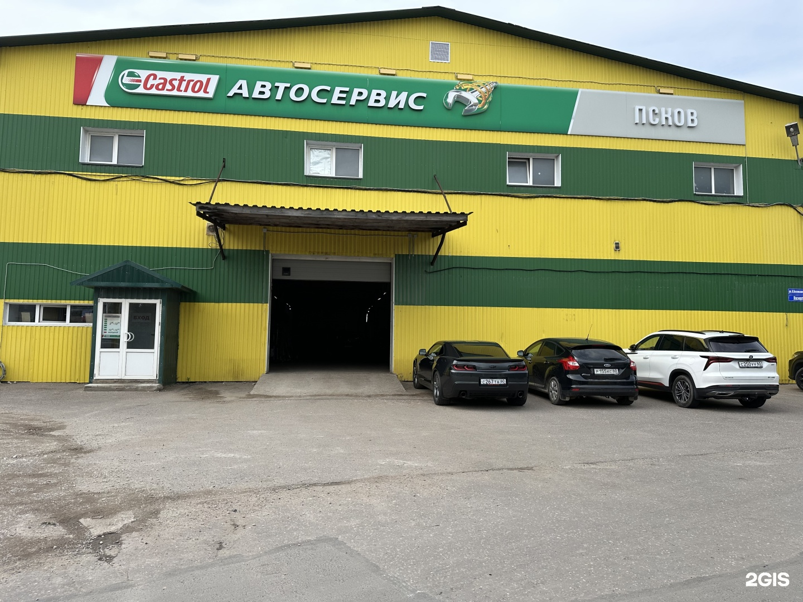
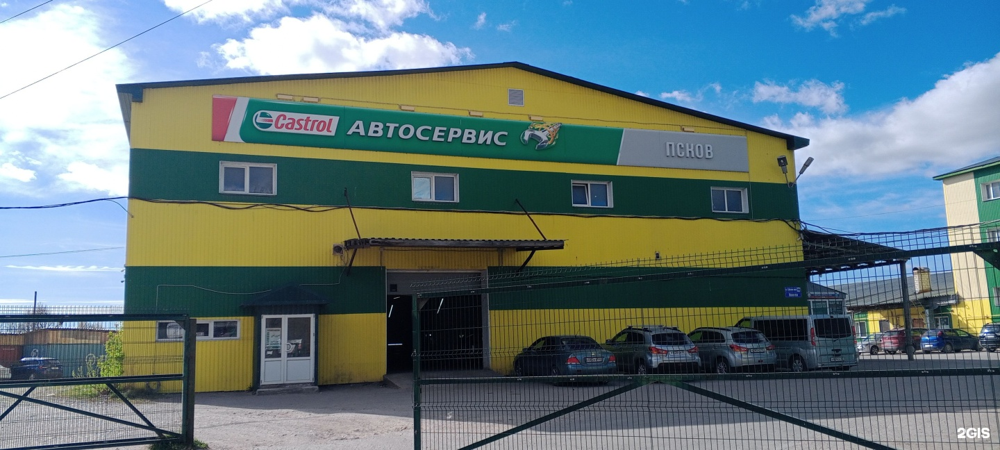
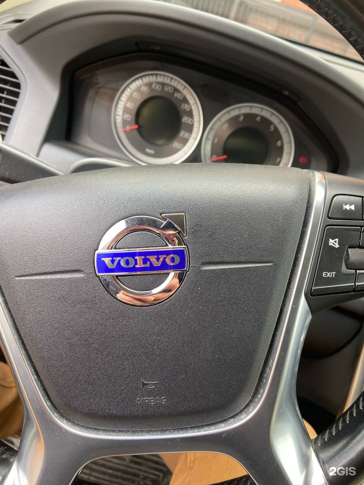

Демо-концепт · текущий прайс ещё не подтверждён
Услуги
Что делаем
Компьютерная диагностика автомобилей
Шиномонтаж
Замена масла
Развал-схождение
Ремонт ходовой части автомобиля
Также — ремонт рулевых реек.
Ремонт рулевых реек
Ремонт электронных систем авто
Обслуживание автомобильных климатических систем
Уточните обслуживание и ремонт
ПозвонитьОтзывы
Что отмечают посетители
Один клиент считает удобной возможность заказать запчасти на месте.
Посетитель положительно оценивает оперативность ремонта и замены масла.
В одном отзыве отмечают отсутствие навязывания лишних работ.
Пересказ мнений посетителей без имён авторов. Все отзывы в 2ГИС
Цены
Услуги и цены
Фото
Сервис на фотографиях


Контакты
Как нас найти
Псков, улица Леона Поземского, 110е к1
Запсковье
Часы работы
- Пн–Пт 09:00–19:00
- Сб 10:00–16:00
Телефон
+7 (8112) 23-20-32